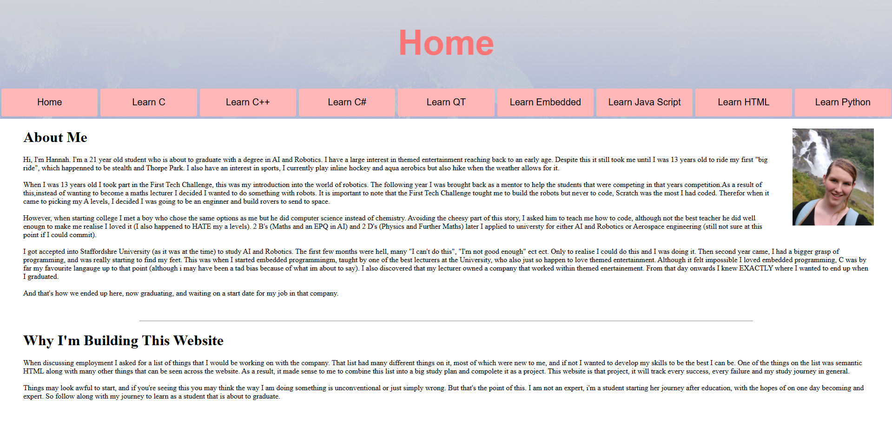
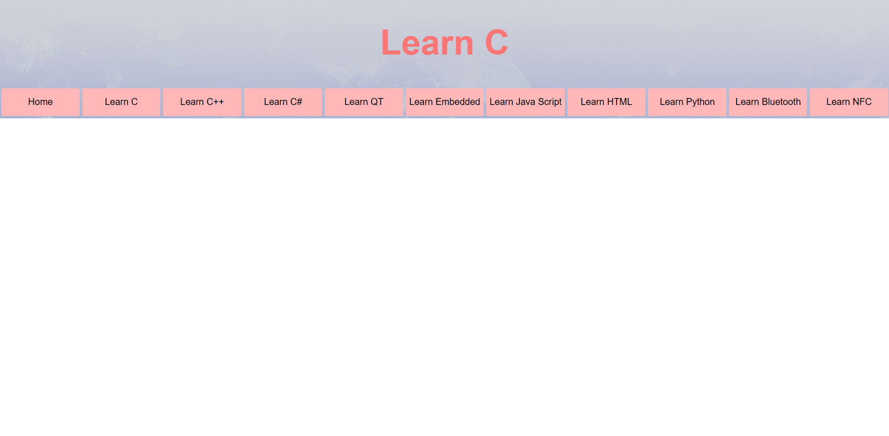

This page follows the progress of my HTML learning path. Not only will it go through what I believe to be this websites milestones. It will also follow any other progress made with other tools that I am using to teach me semantic HTML. Although I have coded basic websites in the past, I would consider myself a complete beginner. Also I have never built a website using solely semantic HTML, so i'm hoping to be successful this time, and if i'm not it;s likely because I am unaware. I also hope for this website to be better designed and more adventerous than previous attempts as I am no longer time restricted.

